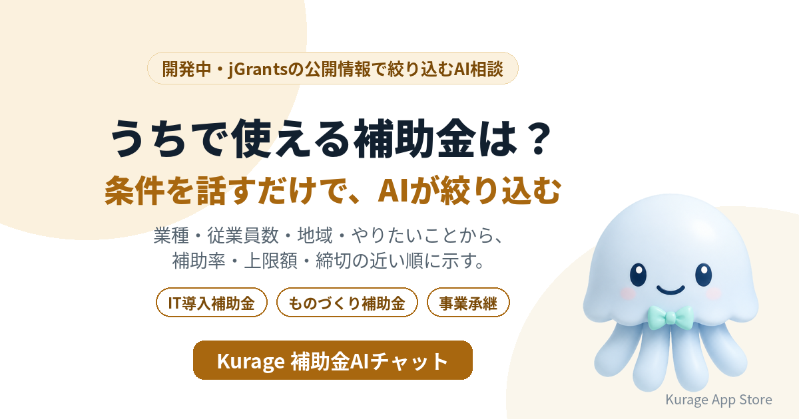

IT導入補助金・ものづくり補助金、うちで使えるのはどれ？会社の条件からAIが絞り込む「補助金AIチャット」を開発中
補助金は数が多く、対象や締切も細かく分かれています。業種・従業員数・地域・やりたいことを話すと、いま申請できる補助金を絞り込んで答えるAI相談システムを開発しています。名前は Kurage 補助金AIチャット です。

- 詳しい説明: Kurage 補助金AIチャット（開発中）
- Kurage App Store の掲載: Kurage 補助金AIチャット
まだシステムはありません。先に入口のページだけを公開し、使いたい方からの問い合わせやアクセスを見てから作ります。
補助金の名前で検索している人が多い
キーワードプランナーで測ると（2026年10月1日）、こういう語が検索されています。
- IT導入補助金: 27,100
- ものづくり補助金: 27,100
- 事業承継補助金: 3,600
- 補助金 中小企業: 3,600
補助金の名前は知っていても、自分の会社が対象になるのか、いま公募しているのか、締切はいつかは、公募要領を読まないと分かりません。
会社の条件を話すだけで
予定している答え方は次のとおりです。
- 社員10人の製造業。設備を入れたいが、使える補助金は？ — 業種・従業員数・地域・目的が合う補助金を絞り込み、補助率・上限額・締切の近い順に示します。
- 会計ソフトを入れたい。IT導入補助金は使える？ — 対象・補助率・申請の流れと、いま公募中かどうかを示します。
- 締切が近いものだけ知りたい — 条件に合う補助金を締切の近い順に並べ、申請に要る準備の目安を添えます。
- 事業を引き継ぐ予定 — 事業承継・引継ぎに使える補助金を示します。
採択されるかは判定しない
絞り込みは、補助金の公開情報（対象・補助率・上限額・締切）を規則で当てはめて行います。AIはその結果を言い換えるだけなので、存在しない補助金や金額を作りません。採択されるかどうかは審査で決まるので、判定しません。
jGrantsにはすべての補助金・助成金が載っているわけではありません。対応している範囲は、画面に明記します。
いまの補助金ナビとの違い
当社にはすでに Kurage 補助金ナビ があります。条件を選んで絞り込む画面で、デジタル庁のjGrantsの公開情報を使っています。補助金AIチャットは、会社の状況を言葉で話すと、それを条件に直して絞り込み、結果を説明する形にします。申請書の様式を埋める 申請書記入アシスト と組み合わせることも考えています。
作る前に、入口だけを出した理由
中小企業が自分で使うのか、士業や商工会議所が相談の一次対応に使うのか、IT・設備の販売会社がお客様への提案に使うのかで、必要な画面と補助金の範囲が変わります。使いたい方の声を聞いてから、開発の順番と仕様を決めます。
使ってみたい方へ
士業・支援機関のサイトへの設置や、AIエージェントから呼べるMCPサーバーの形を考えています。お気軽にお問い合わせください。